Benchmark Results
PR #195 - Run 32973546723
Run Data
| Config | Mean (s) | Std Dev | User (s) | System (s) |
|---|---|---|---|---|
| dbcache=450MB (instrumented) | 2303.773 | N/A | 3634.796 | 391.609 |
| dbcache=450MB (instrumented) | 2228.708 | N/A | 3636.146 | 393.080 |
No nightly baseline data available for comparison.
Flamegraphs and Charts
Debug logs available as CI artifacts (expires after 90 days)
450-instrumented - parent-450-instrumented
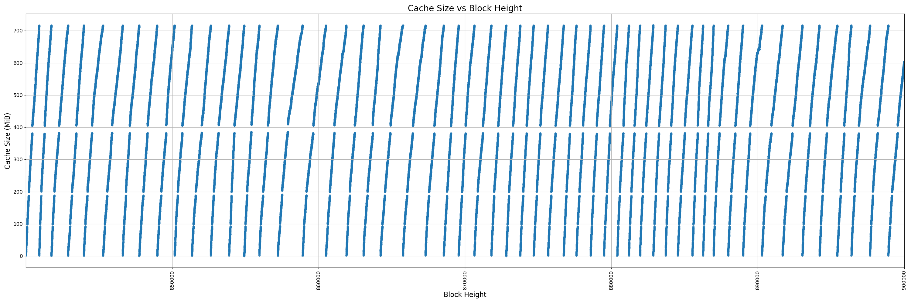
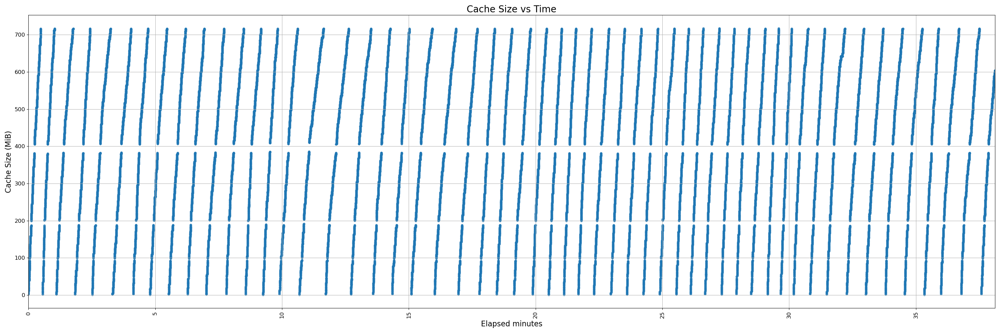
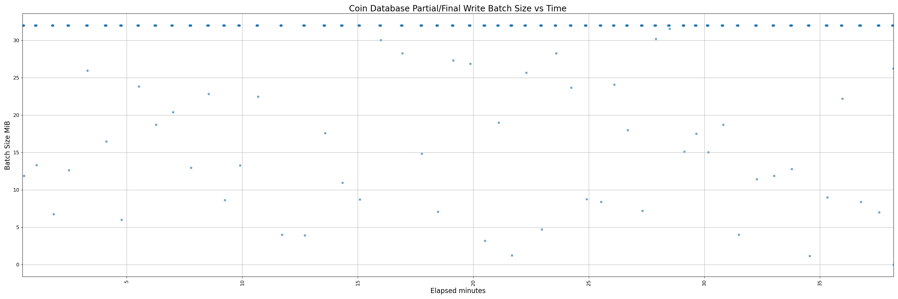

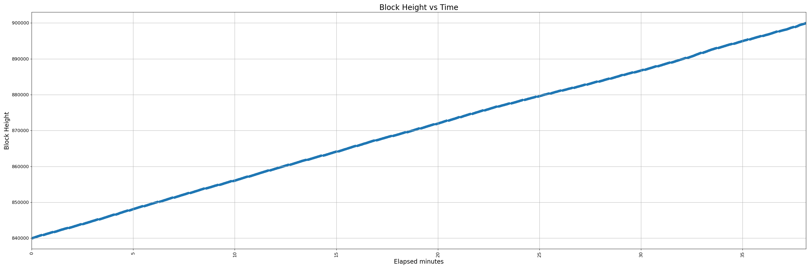
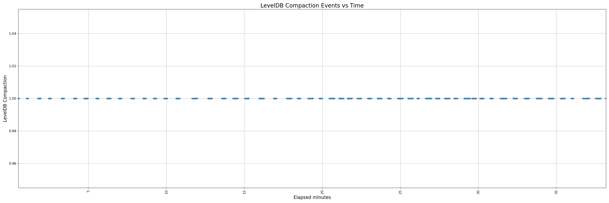
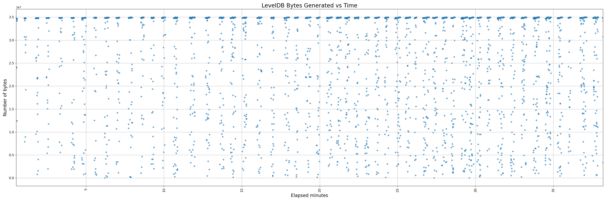
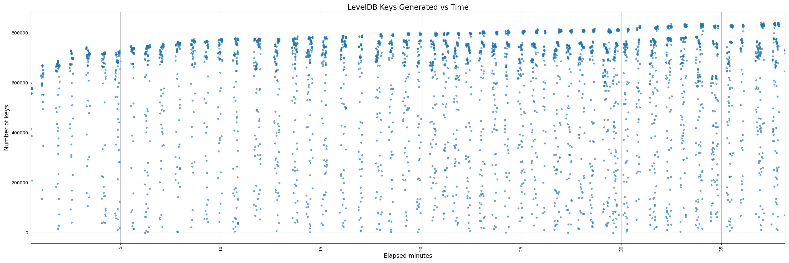

450-instrumented - change-450-instrumented

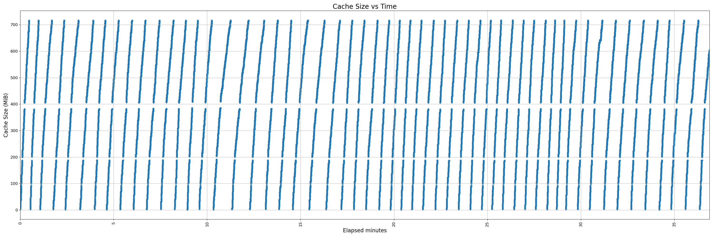
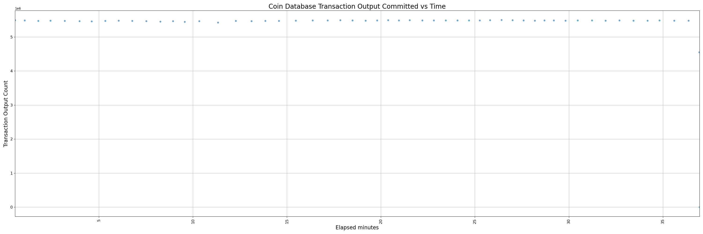
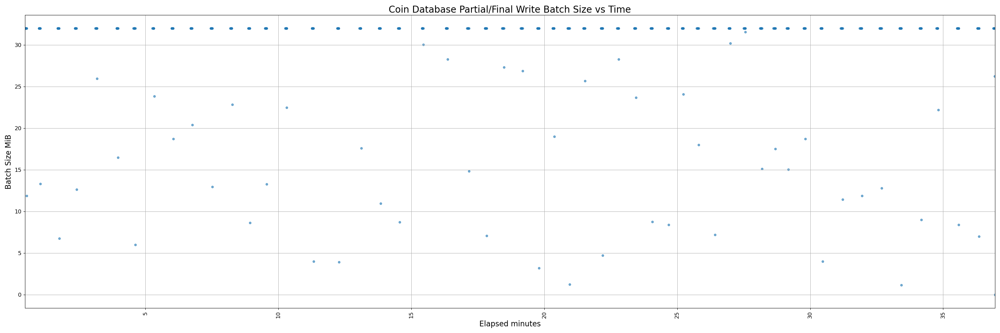
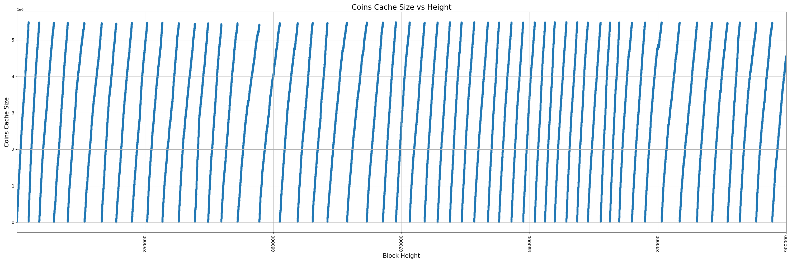
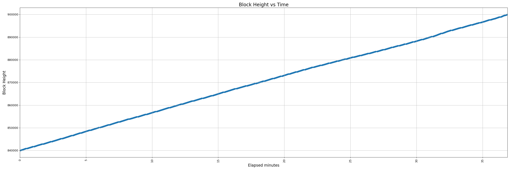
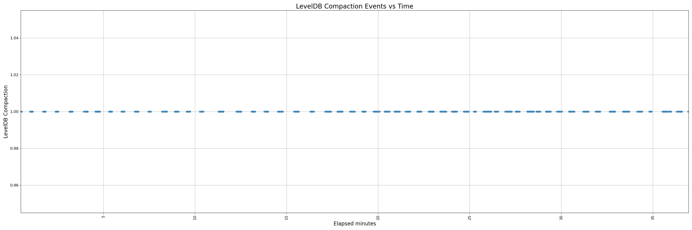
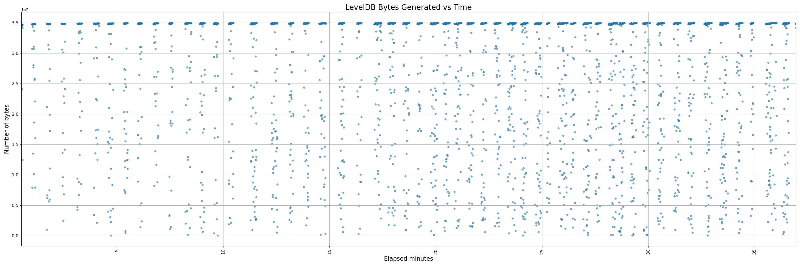
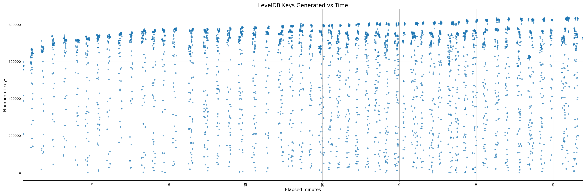